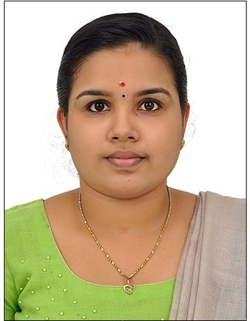

Arya M. V.Mathematics teacher
MSc Mathematics graduate with a 9.71 CGPA, a prize-winning teacher and speaker, and a love of learning that she brings to every classroom.

Objective
To use strong communication skills and a love for learning to become a successful mathematics teacher at Rajagiri School of Engineering and Technology.
Arya has taught in front of an audience before: she won second prize in the teaching competition at the Mathematics Fest of KMM College of Arts and Science, Thrikkakara.
She also took part in the Mathematics Club Day celebrations at Rajagiri School of Engineering and Technology, Kakkanad.
Education
MSc Mathematics
Sacred Heart College, Thevara
2019–2021
BSc Mathematics
Sacred Heart College, Thevara
2016–2019
Plus Two, Bio-Maths
Mary Matha Higher Secondary School, Thrikkakara
SSLC
Full A+
Awards and recognition
| Year | Competition | Place | Where |
|---|
Leadership and skills
Leadership
- School leader, 2015–16, Mary Matha Higher Secondary School
- House captain (vice), 2011–12, 2012–13 and 2014–15
- Organised programmes and activities at school
Strengths
- Responsible, resourceful and self-motivated
- Creative and efficient
- Inspires and motivates others
Tools and languages
- Microsoft Office: Excel, PowerPoint, Word
- Speaks and writes English, Malayalam and Hindi
Hobbies
- Reading
- Cooking
- Gardening
References
Fr. Johnson X. Palackappillil (Fr. Prasant CMI)
Former Principal, Sacred Heart College, Thevara
Sanil Jose
Assistant Professor, Department of Mathematics, Sacred Heart College, Thevara
Didimos K. V.
Assistant Professor, Department of Mathematics, Sacred Heart College, Thevara